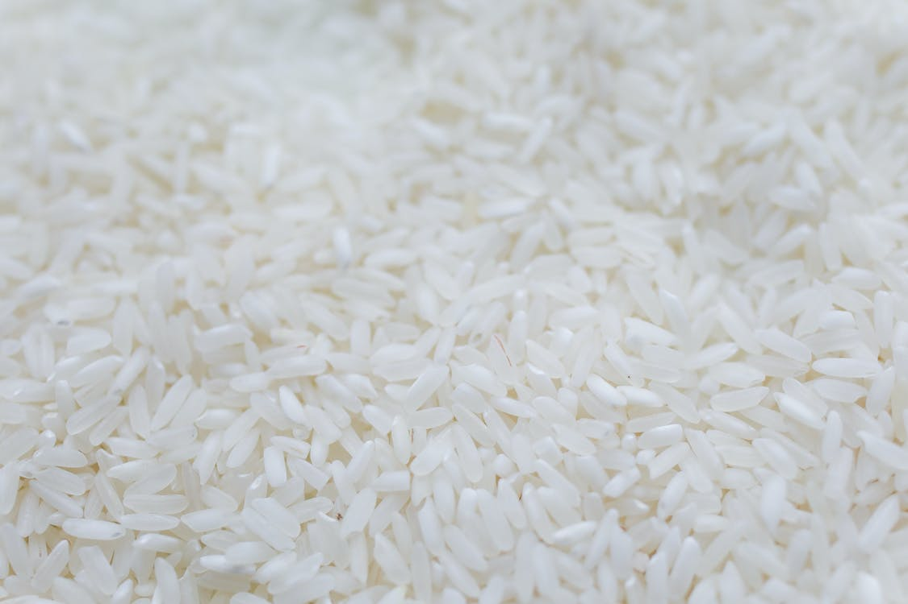

Microwave Instant Rice

Image taken from Pexels.
Description
Instant rice is a quick and easy dish. Requiring a microwave, rice, water, salt, and oil, the ingredients are few, and the microwave will do the majority of the work for you! You'll speedily have a side ready to eat.
Ingredients
- Dry Instant Rice
- Salt
- Water
- Light Olive Oil
Steps to Cook
- Pour a cup of rice into a Pyrex or similar glass cooking bowl, followed by a cup of water. If wet rice is desired, pur a little extra water into the bowl as well.
- Mix in olive oil and salt to the bowl to taste. This can tried by sticking a finger into the bowl and licking it to sample. Repeat until it reaches the desired taste.
- Place the bowl into the microwave and set it to cook for 5 minutes.
- After 5 minutes, open the microwave and stir the rice with a spoon to ensure the rice and water are evenly distributed. Be careful as the cooking bowl will be very hot! Oven mitts can be used to prevent burning oneself.
- Set the microwave to cook the rice for an additional 2 minutes. After this, it should be ready to serve! Again, be careful that the glass bowl does not burn you.